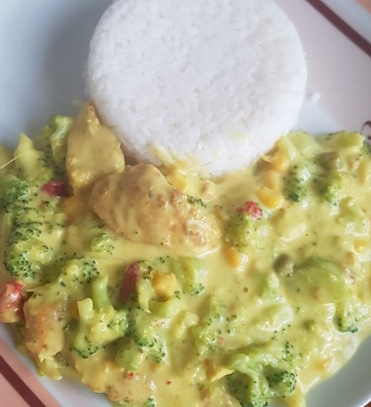

45 mins

easy
cheap
Ingredients:
- Chicken Breast
- 120
- g
- Olive Oil
- 8
- ml
- Onion
- 1
- pc
- Broccoli
- 50
- g
- Blue Cheese
- 20
- g
- Garlic
- 1
- pcs
- Milk
- 10
- ml
- Salt, BP, others
- 0.01
- mg
Instructions:
- Step: In a larger pot, fry finely chopped onions in hot oil until vitreous.
- Step: Add chopped chicken breast into small pieces.
- Step: Season the meat and let it simmer over a weaker flame for about 20 minutes.
- Step: In the second saucepan, pour the chopped and washed brocolli into smaller pieces with 1 cup of hot water.
- Step: Simmer for about 10 minutes - until softened.
- Step: Then mix the brocolli with the water left in the pot.
- Step: Incorporate blue cheese, crushed garlic cloves and salt into the resulting puree.
- Step: If necessary, add a little milk. When the meat is ready, mix it with the resulting brocolli sauce.